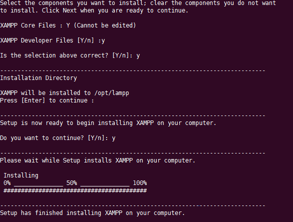
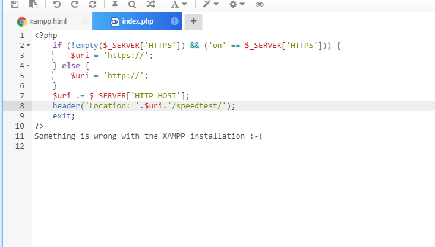

xampp建站
一、工具/原料
xampp
二、PHP环境配置
1、可以在终端使用getconf LONG_BIT 命令来查看并确定linux操作系统版本。
输出：32表明系统是32位
输出：64表明系统是64位。
2、下载与自己操作系统相适应版本的xampp
[32bit] wget https://sourceforge.net/projects/xampp/files/XAMPP%20Linux/5.6.14/xampp-linux-5.6.14-4-installer.run
[64bit] wget http://sourceforge.net/projects/xampp/files/XAMPP%20Linux/5.6.14/xampp-linux-x64-5.6.14-0-installer.run
3、安装xampp，为私有云安装构建阿帕奇和php环境
4、启动xampp，执行/opt/lampp/lampp start启动服务
三、将网站搭载在服务器
/opt/lampp/htdocs/ 这个目录就是存放网站的目录
假如我把speedtest文件夹放在这个目录下 xxx.xxx.xxx.xxx/speedtest 就是访问地址
xxx.xxx.xxx.xxx 为你的ip地址或域名
若不能访问请 chmod -R 777 你的网站目录
/opt/lampp/htdocs/index.php 这个文件可以修改ip或域名指向的目录
